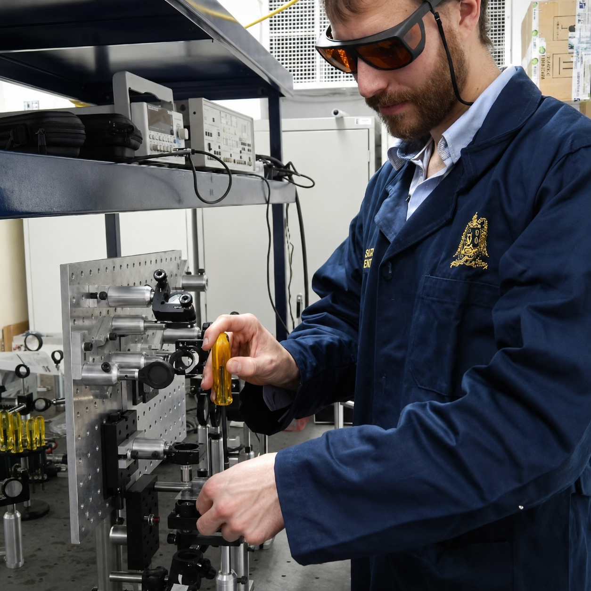

transport phenomena, and energy
applications through research
and teaching.

As a research scientist, I am deeply invested in exploring both the fundamental and practical realms of transport phenomena. My expertise particularly lies in fluid mechanics and energy technology, where I employ both experimental and numerical methods.
Currently, I work as a professor and researcher in Rio de Janeiro, Brazil, with research activities focused on experimental fluid mechanics, turbulent flows, particle-laden flows, flow diagnostics, and thermal-fluid applications.
My work connects fundamental investigations of flow physics with applied problems in engineering, including pipe flows, fouling, multiphase systems, heat transfer, and energy-related applications.
Research & Publications
Research
My research combines experimental fluid mechanics, flow diagnostics, modelling, and simulation to study transport phenomena in engineering systems. The work ranges from turbulent and particle-laden flows relevant to flow assurance to thermal-fluid problems in renewable energy and energy storage.

Experimental Fluid Mechanics, Flow Diagnostics & Flow Assurance
My main research area is experimental fluid mechanics applied to flow assurance problems. I investigate turbulent and particle-laden flows, coherent structures, entrance effects, fouling, and deposition. This work combines advanced flow diagnostics such as PIV, LDA, and flow measurements with advanced statistical data analysis.
Renewable Energy & Energy Storage
A second research line focuses on renewable energy and energy storage systems, mainly through modelling and numerical simulation. I study heat transfer, phase-change materials, passive thermal management, solar-thermal applications, and energy-efficient systems, with emphasis on understanding thermal behavior and supporting design decisions.

Selected Journal Publications
2026
-
C. Monreal Jiménez, J. Rojas Ricca, R. Jäckel, J. A. Araoz Ramos, G. Barrios, A. Ramos Blanco, and G. Gutiérrez-Urueta.
Enhancing Solar Thermal Resource Continuity in Mexican Climates Using PCM-Based Thermal Energy Storage: Transient Modeling and Performance Comparison.
-
C. Monreal Jiménez, A. Jiménez-Godoy, G. Barrios, R. Jäckel, A. Ramos Blanco, and G. Gutiérrez-Urueta.
Generalization of Machine Learning Surrogates Across Building Orientation and Roof Solar Absorptance in Naturally Ventilated Dwellings.
2025
-
B. E. Owolabi, R. Jäckel, L. Moriconi, and J. B. R. Loureiro.
Large heavy particles in turbulent pipe flows: Skin friction drag, turbulence modulation and preferential particle distribution.
-
C. Avilés-Cruz, M. Magos-Rivera, R. Jäckel, H. Puebla, and J. Ramírez-Muñoz.
Deep learning model for flow regime identification in mixing tanks from pressure signals.
-
S. Ayala-Zambrano, R. Jäckel, G. L. Gutiérrez-Urueta, A. Ramos Blanco, and C. Monreal Jiménez.
Parametric optimization of cylindrical vaccine transport containers with dual phase change materials to prevent vaccine freezing and heat damage using artificial neural networks.
2024
-
R. Jäckel, B. Magacho, B. E. Owolabi, L. Moriconi, and J. B. R. Loureiro.
Experimental characterization of coherent states in turbulent magnetohydrodynamic pipe flow.
-
B. G. Gamboa-Loya, R. Jäckel, G. L. Gutiérrez-Urueta, C. Monreal-Jiménez, J. E. Rojas-Ricca, and R. Peña-Gallardo.
Assessment of thermal comfort with phase change materials in a standard house for different Mexican climates: a simulation study using EnergyPlus.
2023
-
R. Jäckel, B. Magacho, B. E. Owolabi, L. Moriconi, D. J. C. Dennis, and J. B. R. Loureiro.
Stochastic model of organizational state transitions in a turbulent pipe flow.
-
R. Jäckel, B. Magacho, B. E. Owolabi, L. Moriconi, D. J. C. Dennis, and J. B. R. Loureiro.
Coherent organizational states in turbulent pipe flow at moderate Reynolds numbers.
2021
-
R. Jäckel, G. Gutiérrez-Urueta, and F. Tapia.
A review on Pitot tube icing in aeronautics: Research, design and characterization — future trends.
2020
-
R. Jäckel, F. Tapia, G. Gutiérrez-Urueta, and C. Monreal Jiménez.
Design of an aeronautic Pitot probe with a redundant heating system incorporating phase change materials.
2019
-
R. Jäckel, G. L. Gutiérrez Urueta, F. Tapia Rodríguez, and C. Monreal Jiménez.
Numerical and experimental characterisation of an aeronautic Pitot probe.
Teaching & Supervision
Teaching
- 2026.1: Experimental Methods in Heat and Mass Transfer (Métodos Experimentais em Transferência de Calor e Massa), Graduate Program in Mechanical Engineering (PPGEM), UERJ.
- 2026.1: Fundamentals of Heat and Mass Transfer (Fundamentos de Transferência de Calor e Massa), Department of Sanitary and Environmental Engineering (DESMA), UERJ.
- 2026.1: Fluid Mechanics III (Mecânica dos Fluidos 3), Faculty of Oceanography (FAOC), UERJ.
- 2025.2: Fundamentals of Heat and Mass Transfer (Fundamentos de Transferência de Calor e Massa), Department of Sanitary and Environmental Engineering (DESMA), UERJ.
- 2025.2: Fluid Mechanics III (Mecânica dos Fluidos 3), Faculty of Oceanography (FAOC), UERJ.
- 2025.2: Transport Phenomena (Fenômenos de Transporte), Faculty of Engineering (FEN), UERJ.
- 2025.2: Fundamentals of Boundary Layers (Fundamentos de Camada Limite), Graduate Program in Mechanical Engineering (PPGEM), UERJ.
- 2025.1: Fundamentals of Heat and Mass Transfer (Fundamentos de Transferência de Calor e Massa), Department of Sanitary and Environmental Engineering (DESMA), UERJ.
- 2025.1: Fluid Mechanics III (Mecânica dos Fluidos 3), Faculty of Oceanography (FAOC), UERJ.
- 2022.2: Experimental Techniques in Thermofluids (Técnicas Experimentales en Termofluidos), Graduate Program in Mechanical Engineering, Universidad Autónoma de San Luis Potosí (UASLP), Mexico.
Student Supervision
Current Supervision
-
Karolyna Gomes dos Santos — Ph.D. dissertation
Análise Experimental de uma Válvula AICD Circunscrita em Caixa de Acrílico Utilizando Técnicas de PIV [Experimental analysis of an AICD valve enclosed in an acrylic box using PIV techniques].
Universidade Federal do Rio de Janeiro, Brazil.
Co-supervision with Prof. Juliana Rodrigues Braga Loureiro.
Period: 2025–2029, expected. -
Gustavo Prado Ferreira — Master’s thesis
Estudo Experimental da Turboforese de Partículas Inerciais Densas em um Escoamento Sólido-Líquido Descendente [Experimental study of the turbophoresis of dense inertial particles in a descending solid-liquid flow].
Universidade Federal do Rio de Janeiro, Brazil.
Co-supervision with Prof. Juliana Rodrigues Braga Loureiro.
Period: 2023–2026, expected. -
Lorena de Azeredo Leite Souza — Master’s thesis
Heat Transfer Modeling in Phase Change Materials via the Generalized Integral Transform Technique.
Universidade do Estado do Rio de Janeiro, Brazil.
Co-supervision with Prof. Daniel Chalhub.
Period: 2026–2028, expected. -
Sandra Ayala-Zambrano — Ph.D. dissertation
Study and optimization of design parameters of vaccine transport boxes by means of experimental and numerical analysis.
Mechanical Engineering Program, Universidad Autónoma de San Luis Potosí, Mexico.
Co-supervision with Prof. Geydy Luz Gutiérrez Urueta.
Period: 2022–2028, expected.
Completed Supervision
-
Brayan Gerardo Loya Gamboa — Master’s thesis
Prediction of thermal comfort in Mexican homes integrating phase change materials using machine learning algorithms.
Mechanical Engineering Program, Universidad Autónoma de San Luis Potosí, Mexico.
Co-supervision with Prof. Geydy Luz Gutiérrez Urueta.
Period: 2022–2024. -
Jonathan Eli Ricca Rojas — Master’s thesis
Modeling and simulation of a solar Stirling engine with cogeneration incorporating phase change materials for continuous operation.
Mechanical Engineering Program, Universidad Autónoma de San Luis Potosí, Mexico.
Co-supervision with Prof. Geydy Luz Gutiérrez Urueta.
Period: 2022–2024.
Consulting & Patents
My applied work includes technical consulting, patent development, and industry-oriented research in fluid mechanics, flow measurement, thermal-fluid systems, and flow assurance. These activities connect experimental and numerical research with practical engineering challenges, including sensor design, icing mitigation, fouling prevention, and thermal management.
Consulting Experience
Technical consulting in air data probe design and de-icing
Client: Paul Hastings LLP, representing Joby Aviation, Inc.
Period: November 2025 – March 2026
Area: Air data probes, Pitot systems, de-icing,
thermal-fluid analysis, expert technical review
This consulting engagement involved expert technical support in connection with a U.S. litigation matter concerning air data probes and their design. The work drew on expertise in Pitot tube systems, air data probe design, de-icing and anti-icing concepts, thermal-fluid engineering, and flow measurement. The engagement involved independent technical analysis and review of engineering concepts related to air data probe design and thermal protection, while respecting confidentiality obligations associated with the matter.
Thermal analysis and design support for an industrial air-conditioning system
Client: Mabe Leiser S.A. de C.V.
Period: December 2023 – June 2024
Area: Thermal analysis, thermal comfort, modelling and simulation
This consulting project involved the thermal analysis and simulation of temperature variations within an industrial facility. The work included thermal modelling based on process data, equipment information, and airflow conditions, as well as the evaluation of thermal comfort during typical summer and winter operating scenarios. The project resulted in a detailed technical consulting report with recommendations for maintaining the facility temperature within a specified comfort range.
Patents
Modular magnetic system and method for fouling prevention
Original title:
Sistema magnético modular e método de prevenção de incrustações
Patent: BR10202501845
Country: Brazil
Status: Filed, 29/08/2025
Inventors: Robert Jäckel, Juliana B. R. Loureiro,
André S. Freire, Luca Moriconi
This patent describes a modular magnetic system and method for fouling prevention. The concept is connected to the use of magnetic fields in internal flows and aims to influence transport, deposition, and scaling processes in engineering systems. The application is particularly relevant to flow assurance, inorganic scaling mitigation, pipeline systems, and industrial fluid transport.
Portable cylindrical container equipped with two PCMs for the transport of temperature-sensitive products
Original title:
Contenedor portátil cilíndrico equipado con dos PCMs para el transporte de productos sensibles a la temperatura
Patent: MX/A/2025/006497
Country: Mexico
Status: Filed, 12/06/2025
Inventors: Sandra A. Zambrano, Robert Jäckel,
Alberto R. Blanco, Geydy L. Gutiérrez Urueta, Cintia Monreal Jiménez
This patent addresses a portable cylindrical container equipped with two phase-change materials for the transport of temperature-sensitive products. The system is designed to reduce the risk of both overheating and freezing during transport. The concept is relevant for cold-chain logistics, vaccine transport, biomedical products, and passive thermal management.
Aeronautic Pitot tube with auxiliary heating system based on phase-change material
Original title:
Tubo Pitot aeronáutico con sistema de calefacción auxiliar basado en material de cambio de fase
Patent: MX/A/2019/000720
Country: Mexico
Status: Granted, 21/08/2023
Inventors: Robert Jäckel, Fidencio Tapia Rodríguez,
Geydy Gutiérrez Urueta
This patent concerns an aeronautic Pitot tube equipped with an auxiliary heating system based on phase-change material. The concept was developed to improve thermal protection and operational reliability under icing conditions by combining conventional heating with passive thermal energy storage. The work is related to flow measurement safety in aeronautical applications and thermal management of measurement probes.
CV
Academic Education
-
2018–2023:
Doctor of Science (D.Sc.) in Mechanical Engineering,
Universidade Federal do Rio de Janeiro, Brazil.
Dissertation: Study of coherent organizational states in plain and magnetohydrodynamic pipe flow turbulence using SPIV.
Supervisors: Prof. Juliana Rodrigues Braga Loureiro and Prof. Luca Moriconi. -
2015–2018:
Master of Mechanical Engineering (M.Eng.) with focus on Thermofluids,
Universidad Autónoma de San Luis Potosí, Mexico.
Thesis: Design of an aeronautic Pitot probe with a redundant heating system incorporating phase change materials.
Supervisor: Prof. Geydy Luz Gutiérrez Urueta. -
2010–2015:
Licentiate’s Degree in Mechanical Engineering with focus on Energy Technology,
Universidad Autónoma Metropolitana, Mexico.
Thesis: Modeling and simulation of thermal comfort conditions in a building using a passive acclimation system based on incorporated phase change materials.
Supervisor: Prof. Jorge Ramírez Muñoz.
Academic and Industry Experience
- 2025–present: Professor of Mechanical Engineering, Universidade do Estado do Rio de Janeiro, Brazil.
- 2023–2025: Postdoctoral Researcher in Mechanical Engineering, Universidade Federal do Rio de Janeiro, Brazil.
-
2002–2006:
Vocational training as a Mechatronics Technician,
Prinovis Ltd. & Co. KG, Industrial Printing Plant, Ahrensburg, Germany.
During this training, proficiency in mechanics, electronics, and control systems was developed. The training provided hands-on expertise in the setup, operation, and maintenance of the process chain of a large-scale industrial facility.
Contact
Institutional e-mail: robert.jaeckel [at] eng.uerj.br
For academic collaborations, student supervision, consulting inquiries, or technical projects, please contact me by e-mail or through one of the academic profiles listed below.
Academic Profiles
- Lattes Curriculum: lattes.cnpq.br/8702041223970357
- ORCID: orcid.org/0000-0002-6445-9350
- Scopus: Scopus Author Profile
- Google Scholar: Google Scholar Profile
- ResearchGate: ResearchGate Profile